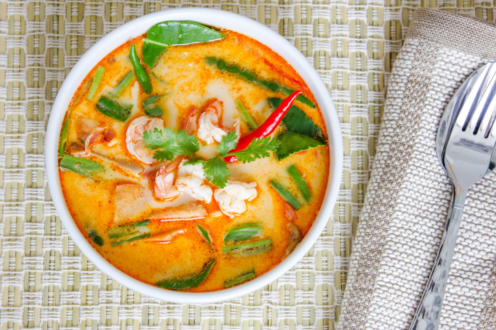
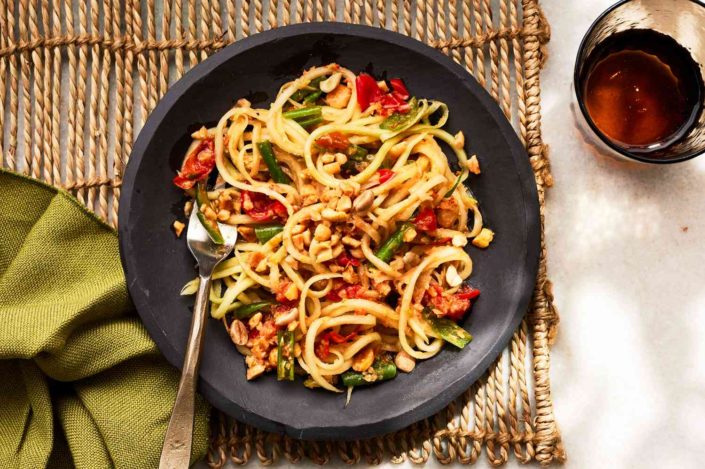
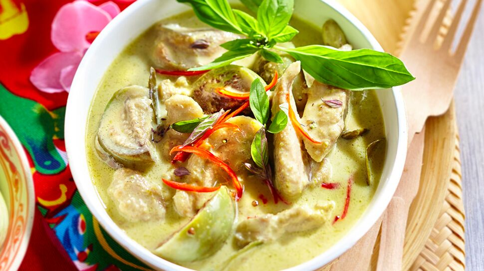

Recettes du Thailande
Découvrez les délices de la cuisine thailandaise avec nos recettes traditionnelles et modernes.
Pad Thaï

Description : Le Pad Thaï est un plat emblématique de la Thaïlande composé de nouilles sautées, de crevettes, de tofu, de légumes et d'une sauce sucrée et acidulée. Ce plat savoureux et équilibré est souvent garni de cacahuètes grillées et d'une touche de citron vert.
Ingrédients :
- 200 g de nouilles de riz
- 200 g de crevettes décortiquées
- 100 g de tofu, coupé en cubes
- 2 œufs
- 1 carotte râpée
- 1 poignée de germes de soja
- 3 c. à soupe de sauce de poisson
- 3 c. à soupe de sauce tamarin
- 2 c. à soupe de sucre de palme
- Cacahuètes grillées, citron vert et coriandre pour la garniture
Instructions :
- Préparer les nouilles : Faire tremper les nouilles de riz dans de l'eau chaude jusqu'à ce qu'elles soient tendres, puis égoutter.
- Cuisson du tofu : Dans un wok, faire revenir le tofu jusqu'à ce qu'il soit doré. Réserver.
- Cuire les crevettes et les œufs : Faire sauter les crevettes, puis ajouter les œufs battus. Mélanger pour obtenir des morceaux d'œufs brouillés.
- Sauter les nouilles : Ajouter les nouilles, le tofu et les sauces (sauce de poisson, sauce tamarin, sucre) dans le wok. Bien mélanger.
- Garniture : Garnir de cacahuètes grillées, de coriandre et d'un quartier de citron vert.
Tom Yum

Description : La soupe Tom Yum est une soupe traditionnelle thaïlandaise épicée à base de crevettes, de champignons et d'aromates tels que la citronnelle, le galanga et les feuilles de kaffir. Elle est appréciée pour son goût piquant et acidulé.
Ingrédients :
- 200 g de crevettes
- 5 champignons, tranchés
- 1 tige de citronnelle
- 3 tranches de galanga
- 4 feuilles de kaffir
- 2 piments rouges, écrasés
- 2 c. à soupe de sauce de poisson
- 1 c. à soupe de pâte de piment
- Jus d'un citron vert
- Coriandre pour garnir
Instructions :
- Préparer le bouillon : Porter à ébullition de l'eau avec la citronnelle, le galanga et les feuilles de kaffir.
- Ajouter les crevettes et les champignons : Ajouter les crevettes et les champignons et cuire jusqu'à ce que les crevettes soient roses.
- Assaisonner : Ajouter la sauce de poisson, la pâte de piment et le jus de citron vert.
- Servir : Garnir de coriandre fraîche et servir chaud.
Som Tam

Description : Le Som Tam est une salade de papaye verte croquante et épicée, préparée avec des haricots longs, des tomates et des cacahuètes. Elle est assaisonnée d'une sauce acidulée et sucrée, typique de la cuisine thaïlandaise.
Ingrédients :
- 1 papaye verte râpée
- 2 tomates, coupées en quartiers
- 50 g de haricots longs
- 2 piments rouges écrasés
- 2 c. à soupe de sauce de poisson
- 1 c. à soupe de sucre de palme
- Jus d'un citron vert
- Cacahuètes grillées pour la garniture
Instructions :
- Préparer la sauce : Mélanger la sauce de poisson, le sucre de palme et le jus de citron dans un bol.
- Assembler la salade : Ajouter la papaye râpée, les tomates, les haricots longs et les piments dans le bol. Bien mélanger.
- Servir : Garnir de cacahuètes grillées et servir frais.
Curry Vert

Description : Le curry vert est un plat crémeux et épicé, typique de la Thaïlande, à base de lait de coco, de pâte de curry vert et de poulet. Il est servi avec du riz et est apprécié pour ses saveurs riches et intenses.
Ingrédients :
- 200 g de poulet, coupé en morceaux
- 2 c. à soupe de pâte de curry vert
- 400 ml de lait de coco
- 1 aubergine thaïlandaise, coupée en morceaux
- 1 poivron rouge, tranché
- 2 feuilles de kaffir
- Basilic thaï pour garnir
- Huile de cuisson
Instructions :
- Faire revenir la pâte de curry : Dans un wok avec de l'huile, faire chauffer la pâte de curry jusqu'à ce qu'elle dégage ses arômes.
- Ajouter le poulet : Ajouter le poulet et cuire jusqu'à ce qu'il soit doré.
- Incorporer le lait de coco et les légumes : Ajouter le lait de coco, les feuilles de kaffir, l'aubergine et le poivron. Laisser mijoter jusqu'à ce que les légumes soient tendres.
- Servir : Garnir de basilic thaï et servir avec du riz.